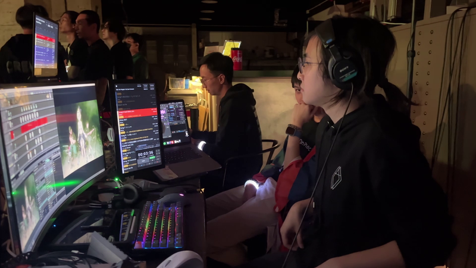

Direct
適合合作、技術總監、虛擬製作、活動製作、系統工程或軟件項目。
聯絡
無論你想合作 cutting-edge project、需要 creative tech solution，或者只是想聊 media and production，我都樂意聽。
Direct
適合合作、技術總監、虛擬製作、活動製作、系統工程或軟件項目。
Elsewhere
可下載 portfolio / CV，或查看軟件相關工作。
需要創作判斷和工程判斷同時存在的項目。
LED 製作棚規劃、Unreal / nDisplay 流程、攝影機追蹤、同步鎖相、鏡頭校正及現場操作程序。
動作捕捉、虛擬藝人、串流、媒體路由、演出控制及控制室設計。
自訂工具、AI 輔助流程、基建規劃及製作網絡。
溝通前
請提供預期成果、時程、場地限制、拍攝或顯示格式、現有技術棧，以及將會操作系統的人員。讓我們把東西做得既能應付現場，又能承載故事。
